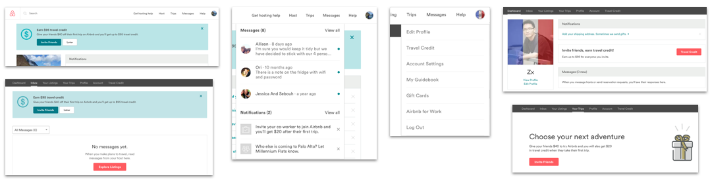
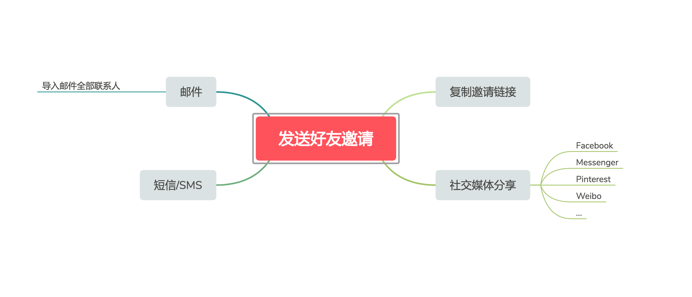
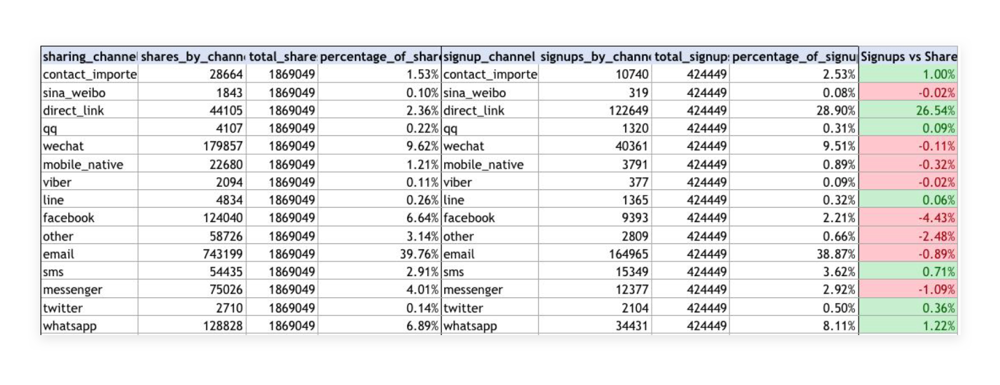
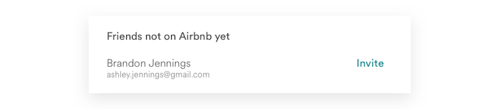
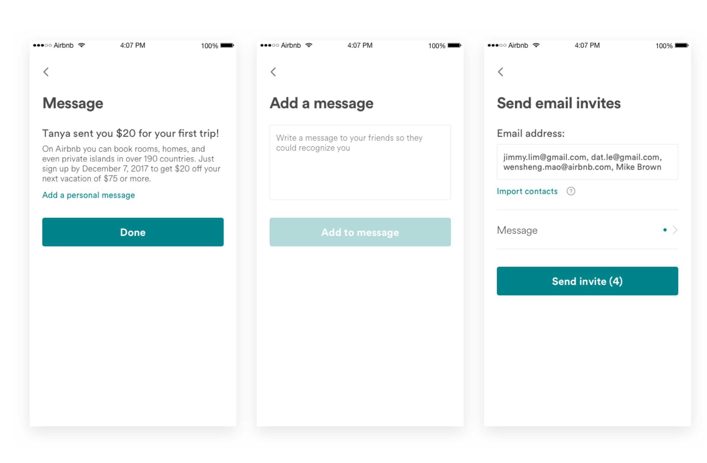
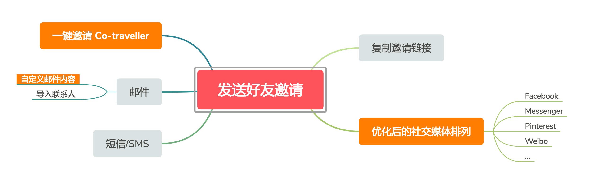

当前 Airbnb 邀请好友的功能全部集中在 ~/referral 的页面中；用户调研结果显示，超过 90% 的用户都认为当前邀请好友可获得的奖励金额足以刺激他们邀请更多的好友；并且有很多用户提到他们在日常生活中的确会通过口口相传的方式把 Airbnb 推荐给他们的朋友。然而真正通过平台邀请过好友的用户却只有不到 10%，同时一些用户表示不知道 Airbnb 可以邀请好友。同时，横向对比不同平台的邀请发送数量，Web 作为主要的主要交易发生平台，邀请发送的数量却远远低于移动端。因此，如何提升 Web 端邀请发送的数量，引导教育用户去邀请更多的好友注册及预订，是此项目的目标。
加深用户对于邀请好友体系的意识，提高好友邀请的发送效率
整理归纳了 Web/Moweb 端所有提示发送好友邀请的通知，对比数据后发现这些通知的流量都不大，效果并不十分理想，只有少部分用户是通过这些入口点击进入 ~/referral 页面；并且，如果这些入口被用户当做弹窗信息关闭之后，再也不会出现，通知的作用大大降低。
通过对用户的调查发现，通知作为一种传统的提示方式，在 Web 端的出现时机并不合适，用户对于这样通知的态度大多是“可有可无”或“没有注意“。因此，如何提升用户对于邀请好友体系的认识，并且在合适的时机提示他们，是我们亟待解决的问题和设计的重点。
我们瞄准了用户使用产品过程中的 “快乐瞬间” -- 即完成订单确认（Post-booking、写了积极的评价（Post-review）、把某房源或体验加入到心愿单（Post-wishlist）和分享某房源（Post-share）之后的时机，在不打断用户的使用体验的前提下，以弹窗的方式，快速高效的提醒用户去邀请好友注册。最终我们商量决定选择先尝试流量最大的 Post-booking 和 Post-review。
我们决定先尝试弹窗提示跳转到 ~/referral 页面的链接，灰度测试 10%，两个礼拜有将近 2500 个用户点击，达到了当时所有入口的第二位，同时这些通过弹窗进入 ~/referral 页面用户的跳出率并没有增加，于是我们决定进一步优化整个好友邀请的体验。
为了进一步提升用户的邀请效率，我们打算尝试让用户在不访问 ~/referral 页面的情况下，在弹窗中能够完成发送邀请的操作，我们首先梳理了用户邀请的流程及不同的邀请方式
其次，针对不同的邀请方式，再结合用研团队的调查结果，我们做出了如下优化：
1. 统计所有现存的邀请好友渠道，并根据被使用的频率对邀请渠道的排列进行了优化展示
2. 一键快捷邀请 - 优先推荐邀请与用户一同旅行过的 co-traveller，以此减少用户思考应该邀请谁的麻烦
3. 自定义信息 - 根据用户调研，模板信息的使用让邮件看起来更像垃圾邮件，因此受邀用户更倾向于忽略这些邀请。因此自定义的信息可以让邀请看起来更加真实
随后，结合这些改进，我们重新梳理了优化后的好友邀请流程，对比了多种设计方案，并最终确定了唯一邀请流程
在跟 CX 团对沟通中发现，很多用户在邀请好友后，对于奖金的关注度非常高，但由于对整个推荐体系运作方式的不够了解导致 CX 收到了很多用户询问和投诉反馈。因此我们决定在弹窗邀请完成后，允许用户去 ~/referral 页面查询更详尽的信息，前者因此的定位更像是一个邀请工具，而后者则是一个完整的邀请体系。
提升发送邀请的效率只是整个邀请好友系统的第一步，我的工作涵盖了整个邀请流程 -- 从增加发送邀请的数量，到邀请方式的优化，再到邀请信息的到达率和转化率（邮件机制），以及后期的邀请奖金进度追踪及其他信息透明化。